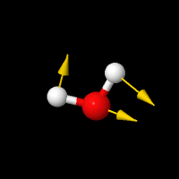
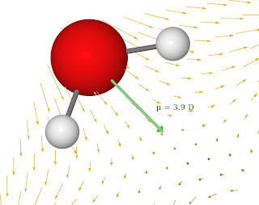
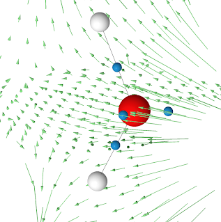

Awk and Jmol

I have a structure that I can easily visualize with Jmol and I want to plot vectors at each atom. Here I am giving an example with Jmol, but the concept is the same for any other program. The command to plot such vectors with Jmol is
draw ID vector (atomno=1) {x,y,z}
For larger molecules this quickly becomes quite a tedious work to type all this commands... so let awk write it for us.
The output is printed to the sceen and saved in file vectors.spt that will later run in Jmol.
$ awk '{i++;printf ("draw v%i vector (atomno=%i) {%f,%f,%f}\n",i,i,$1,$2,$3)}' vectors.dat | tee vectors.spt
draw v1 vector (atomno=1) {-0.500000,0.700000,0.700000}
draw v2 vector (atomno=2) {0.500000,-1.000000,0.900000}
draw v3 vector (atomno=3) {0.500000,-0.500000,0.900000}
where vectors.dat contains our vectors (x,y,z)
vectors.dat
-0.5 0.7 0.7
0.5 -1.0 0.9
0.5 -0.5 0.9
The Jmol script that creates the figure above looks like this (in red is the line that loads the awk generated commands)
# load the molecule
load "1.xyz"
# save the status, orianation etc.
center {6.285864 6.6071978 6.971991};
moveto -1.0 {0 0 1 0} 100.0 0.0 0.0 {6.285864 6.6071978 6.971991} 2.1566827 {0 0 0} 0 0 0 3.0 0.0 0.0;
save orientation "default";
moveto 0.0 { -488 825 -286 58.44} 100.0 0.0 0.0 {6.285864 6.6071978 6.971991} 2.1566827 {0 0 0} 0 0 0 3.0 0.0 0.0;;
wireframe 0.1
set perspectiveDepth FALSE
# load the file generated with awk
script "vectors.spt"
write image 200 200 png "molecule.png"
Here are few more plots generated the same way.


Of course, you can use the same "trick" to change colors, sizes, or any other properties by generating instructions with simple awk scripts.